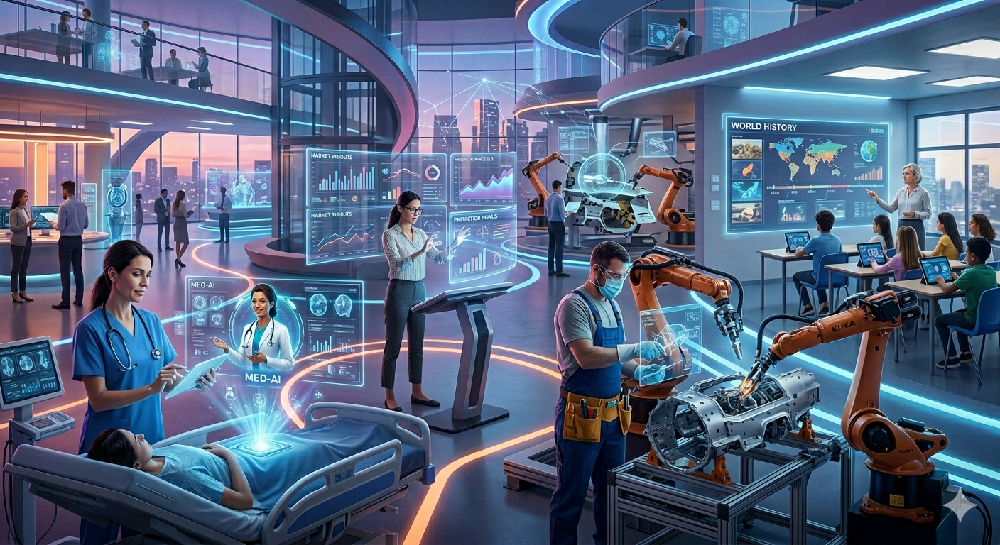

Job Transformation Due to AI
Job Transformation Due to AI
AI isn't simply erasing jobs—it's fundamentally reimagining what work looks like. The more significant story isn't about jobs disappearing; it's about jobs transforming in ways that demand rapid reskilling, new collaboration models, and a shift in what "skilled labor" actually means.
Transformation, Not Elimination: The Central Theme
Rather than solely eliminating jobs, generative AI creates new demand in augmentation-prone roles, suggesting that human-AI collaboration is a key driver of labor market transformation. This distinction is critical: The second category is "retooled" jobs—occupations where the job title might be the same, but the skills within it are changing, because new tools like AI are incorporated or the environment is changing.
AI is quietly transforming public sector work from the inside out. While AI isn't adding more roles, it is reshaping them.
The Speed of Skill Change is Unprecedented
The pace of transformation is staggering. The skills needed for work are expected to change by 70% by 2030. Employers anticipate 39% of core skills will change by 2030. We are not just in a cyclical skills shortage but a structural one.
Faster skill change in AI-exposed jobs is up from 25% last year, with change fastest in automatable jobs. This means workers in the most at-risk roles actually need to learn new skills the fastest.
The Upskilling Explosion
Workers and employers are responding, but the question is whether fast enough. Data shows that AI literacy is a major focus for upskilling. In the EU, for example, the number of professionals adding these skills to their profiles was 80 times greater in 2023 than in 2022.
In spring 2025, nearly 47 percent of workers across all sectors reported using AI tools at least once a month to help them with their work — up from 34 percent the previous year. About one in five workers feel pressured by their employers to use AI, and about three in 10 worry that they're going to fall behind if they don't.
Three Categories of Job Transformation
The first category is entirely new jobs being created. The second category is "retooled" jobs—occupations where the job title might be the same, but the skills within it are changing. In some ways, this is going to be the most important one for workforce development. The third category is legacy jobs—traditional occupations that will remain essential, such as tool and die makers.
The Skills Gap: What Employers Actually Need
There's a crucial disconnect between what workers think they need and what employers actually want. Recent research shows that while professionals acknowledge AI's growing importance, many underestimate its effect on their own roles, contributing to a widening skills gap. Success in today's job market requires a balance of both technical fluency and soft skills proficiency, but employees may be falling behind on the latter.
Human skills such as communication, attention to detail and leadership remain in high demand among employers. These skills complement AI's capabilities and are transferable across roles and industries. While AI excels at data processing, it falls short in areas like judgment, intuition and cultural awareness.
Hiring managers consistently identify communication and critical-thinking shortcomings in their teams, while the majority of workers remain unaware these gaps even exist.
The Three Dimensions of AI Upskilling
Effective transformation requires a holistic approach. AI upskilling and reskilling unfold along three interconnected dimensions: AI literacy—building a shared baseline of fluency across the organization, reducing fear, increasing transparency, and giving employees the confidence to experiment. AI adoption—embedding tools and behaviors into core workflows by redesigning roles, processes, and incentives so AI becomes part of how work gets done. AI domain transformation—developing domain-specific use cases that extend competitive advantage, often upskilling technical and functional experts to reimagine what is possible.
The Wage Premium for AI Skills
Workers who acquire AI skills are seeing significant financial rewards. There is a 40% wage premium for AI skills comparing workers in the same job with and without AI skills, up from 25% last year. Every industry analyzed pays wage premiums for AI skills.
In the United Kingdom and the United States, job postings that include a new skill tend to pay about 3 percent more. There's an even greater premium for openings with four or more new skills. These roles can pay up to 15 percent more in the United Kingdom and 8.5 percent more in the United States.
The Most Recommended Upskilling Paths
The most recommended upskilling paths for 2025 include project management and UX design. These fields combine technical understanding with human-centered problem solving. They benefit from AI tools while requiring skills that AI cannot replicate.
Sector-Specific Transformations
Manufacturing: From Workers to Overseers
Modern manufacturing increasingly requires workers who can oversee AI systems, interpret data outputs, and handle exceptions that automated systems cannot manage. The transformation emphasizes human-AI collaboration. Workers use AI for predictive maintenance, quality control, and supply chain optimization. Manufacturing jobs evolve toward higher-skill positions that combine technical knowledge with digital literacy.
Retail & Customer Service: From Transactions to Relationships
Retail and customer service face the most direct AI impact on front-line workers, but automation creates opportunities for workers who can manage AI systems, analyze customer data, and provide personalized service that AI cannot replicate.
Finance: Task Evolution, Not Job Elimination
The largest reductions were in the finance and technology sectors, but how companies integrate generative AI technologies is decisive for job loss or growth.
The Human-AI Collaboration Imperative
The future of work isn't about humans versus machines it's about humans working with machines. GenAI technologies require AI literacy skills that enable professionals to use tools such as ChatGPT and Microsoft 365 Copilot, which are already changing how we work. But while GenAI is capable of learning hundreds of skills like writing, editing and data analysis—there are hundreds more skills that GenAI doesn't have. Crucially, these are people skills, like leadership, teamwork, negotiation and relationship building. These skills are critical for the implementation of AI technologies and for successful business operations more broadly.
Embedding Learning in the Flow of Work
Static training programs are giving way to continuous, integrated learning. Another way to make training sticky is embedding it directly into the flow of work. Innovations like Model Context Protocol (MCP) align upskilling with job-specific responsibilities, creating a seamless learning journey. By fostering a culture of continuous improvement powered by AI-driven insights, organizations can encourage employees to prioritize essential career skills.
By using AI to embed learning in AI tools and workflows, companies can continue to break down the distinction between working and learning in ways that were previously not possible. Embedding upskilling in the flow of work and linking it to visible career pathways transforms the narrative. Individuals don't just learn skills to remain employed in the future; they see a future for themselves in an AI-enabled organization.
The Generational Dimension
Millennials aged 35-44 are emerging as natural change champions. Many are managers and team leaders who can drive organizational AI adoption while supporting their teams through the transition. Gen Z faces unique pressures but also shows high adaptability and comfort with digital tools.
However, young people will continue to bear the brunt of the AI transition as early career roles are reduced everywhere. Stanford's Canaries in the Coal Mine 2025 report revealed that U.S. jobs most exposed to AI automation have declined fastest for ages 22-25.
New Skills, New Jobs Emerging
One in 10 job postings in advanced economies and one in 20 in emerging market economies now require at least one new skill. Professional, technical, and managerial roles are seeing the most demand for new skills, particularly in IT, which accounts for more than half of this demand.
The Equity Challenge
That lack of investment has consequences for workers who are displaced by new technologies and automation. The U.S. does not have a public funding system that can quickly seed new training programs or scale successful ones. Workforce development in the U.S. is chronically underfunded compared to peer nations.
84% of international employees receive organizational support to learn AI skills, versus just 51% of US employees. This suggests US workers may need to take more personal responsibility for developing AI competencies.
The Critical Success Factors
AI isn't replacing work so much as changing how it is done and redefining the concept of "skilled labour"; constant reskilling will be needed to meet the pace of transformative technology. For organizations, institutions, and individuals, the agility that comes with lifelong learning culture is no longer optional.
In automation-prone occupations, workers may face displacement unless they develop non-automatable skills, such as judgment and interpersonal communication skills. Companies should invest in reskilling programs to transition workers to roles enhanced by AI.
The Bottom Line
Job transformation due to AI is not a single event—it's an ongoing process that redefines work, skills, and careers. The extent to which AI strengthens economies will depend on how well we prepare workers and firms for the transition. Work brings dignity and purpose to people's lives. That's what makes the AI transformation so consequential.
The workers, organizations, and nations that embrace continuous learning, invest in human skills alongside technical capabilities, and approach AI as a collaboration partner rather than a threat will thrive. Those that resist will be left behind.